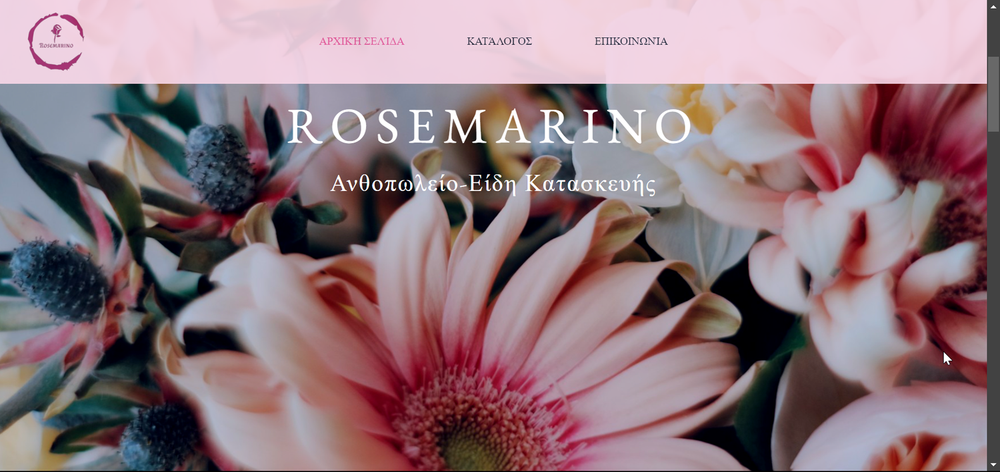

Keylogger ( Εκπαιδευτικό)
Δημιουργία ενός keylogger με χρήση python για εκπαιδευτικούς σκοπούς για την επίδειξη των εννοιών της κυβερνοασφάλειας και της σημασίας της ασφάλειας του συστήματος.
Δείτε το έργο →Τεχνικός Υποστήριξης Πληροφορικής & Δικτύων
Επικοινωνία ↗Προβολή / Αποθήκευση CV ↗"Είμαι ενθουσιώδης τεχνικός εφαρμογών πληροφορικής, με πάθος για την τεχνολογία και την επίλυση προβλημάτων σε πολλούς τομείς της πληροφορικής."
Είμαι φοιτητής πληροφορικής με καλή γνώση και εμπειρία σε πολλούς τομείς της τεχνολογικής βιομηχανίας. Έχω βασικές δεξιότητες στην ανάπτυξη λογισμικού, τη διαχείριση δικτύων και την υποστήριξη πελατών, ενώ είμαι ευπροσάρμοστος και συνεχώς ενημερωμένος για τις τελευταίες τεχνολογικές εξελίξεις. Οι οργανωτικές και επικοινωνιακές μου ικανότητες, καθώς και η δέσμευσή μου για συνεχή επαγγελματική ανάπτυξη, μου επιτρέπουν να ανταποκρίνομαι αποτελεσματικά στις τεχνολογικές προκλήσεις, συμβάλλοντας στην επίτευξη των στόχων κάθε ομάδας ή οργανισμού. Στόχος μου είναι να ενταχθώ σε μια εταιρεία όπου θα μπορώ να αξιοποιήσω και να αναπτύξω τις δεξιότητές μου, ενώ παράλληλα θα συνεισφέρω θετικά σε κάθε επίπεδο πληροφορικής.
Τεχνολογίες και εργαλεία από την επαγγελματική μου εμπειρία, τις σπουδές και το προσωπικό home lab.
Δεν δηλώνονται επίπεδα εξειδίκευσης ή πιστοποιήσεις για κάθε επιμέρους τεχνολογία.
Υποστήριξη IT, διαχείριση χρηστών και συστημάτων, καθώς και προηγούμενη εμπειρία στην εξυπηρέτηση πελατών.
Δημιουργία ενός keylogger με χρήση python για εκπαιδευτικούς σκοπούς για την επίδειξη των εννοιών της κυβερνοασφάλειας και της σημασίας της ασφάλειας του συστήματος.
Δείτε το έργο → 02
02Ανάπτυξη ενός παιχνιδιού από το μηδέν με τη χρήση της Unity για το Global Game Jam στην Πάτρα. Το παιχνίδι δημιουργήθηκε μέσα σε 7 ημέρες, επιδεικνύοντας δεξιότητες στην ταχεία δημιουργία πρωτοτύπων και στην ομαδική εργασία
Δείτε το έργο →Ανάπτυξη μιας ελαφριάς εφαρμογής Notepad με χρήση Python, που επιτρέπει στους χρήστες να δημιουργούν, να επεξεργάζονται και να αποθηκεύουν αρχεία κειμένου με ευκολία
Δείτε το έργο →
04Σχεδίασα και ανέπτυξα ένα ηλεκτρονικό κατάστημα streetwear με WordPress και WooCommerce, με δυνατότητα εύκολης διαχείρισης περιεχομένου και προϊόντων.
Δείτε το έργο →Ενδιαφέρεστε για συνεργασία; Επικοινωνήστε μαζί μου ↗
Δοκιμάστε εντολές για να εξερευνήσετε το portfolio. Όλα εκτελούνται τοπικά στον περιηγητή.
Πρακτική διαχείριση προσωπικού server με Proxmox VE και υπηρεσίες που συντηρώ.
Proxmox VE για εικονικές μηχανές και TrueNAS για δικτυακή αποθήκευση.
Pi-hole για DNS filtering στο δίκτυο και Uptime Kuma για παρακολούθηση διαθεσιμότητας υπηρεσιών.
Matrix/Synapse με Element και πρόσβαση μέσω Cloudflare Tunnel.